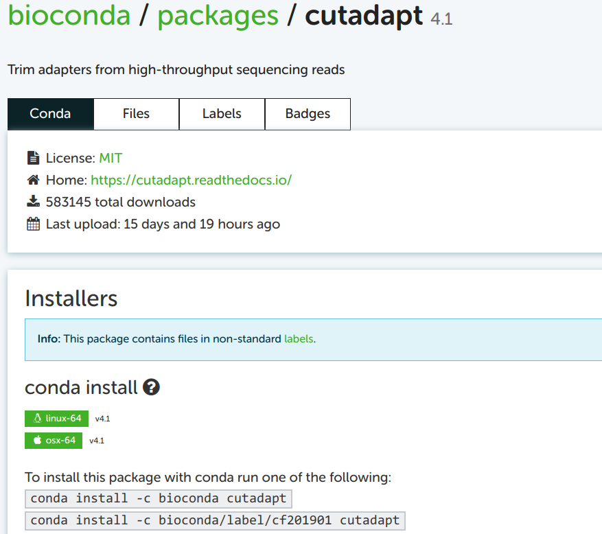

multiqc --helpUsing Software at OSC
Loading existing modules and installing and using software with Conda
Under construction
This page is nearly finished, only the Container section needs to be completed.
Overview & setting up
To analyze RNAseq data and other genomics data sets, a typical workflow includes using a sequence of specialized bioinformatics software.
At OSC, there are system-wide installations of a number of bioinformatics programs. As we briefly saw earlier for FastQC, and will talk about more here, we do need to “load” such programs.
Unfortunately, the collection of bioinformatics programs at OSC is not very comprehensive, and some of the available programs only come in relatively old versions. We therefore also need a way to make other programs available to ourselves at OSC.
Start VS Code and open your folder
As always, we’ll be working in VS Code — if you don’t already have a session open, see below how to do so.
Make sure to open your /fs/ess/PAS0471/<user>/rnaseq_intro dir, either by using the Open Folder menu item, or by clicking on this dir when it appears in the Welcome tab.
Starting VS Code at OSC - with a Terminal (Click to expand)
Log in to OSC’s OnDemand portal at https://ondemand.osc.edu.
In the blue top bar, select
Interactive Appsand then near the bottom of the dropdown menu, clickCode Server.In the form that appears on a new page:
- Select an appropriate OSC project (here:
PAS0471) - For this session, select
/fs/ess/PAS0471as the starting directory - Make sure that
Number of hoursis at least2 - Click
Launch.
- Select an appropriate OSC project (here:
On the next page, once the top bar of the box has turned green and says
Runnning, clickConnect to VS Code.

Open a Terminal by clicking =>
Terminal=>New Terminal. (Or use one of the keyboard shortcuts: Ctrl+` (backtick) or Ctrl+Shift+C.)In the
Welcometab underRecent, you should see your/fs/ess/PAS0471/<user>/rnaseq_introdir listed: click on that to open it. Alternatively, use =>File=>Open Folderto open that dir in VS Code.
Don’t have your own dir with the data? (Click to expand)
If you missed the last session, or deleted your rnaseq_intro dir entirely, run these commands to get a (fresh) copy of all files you should have so far:
mkdir -p /fs/ess/PAS0471/$USER/rnaseq_intro
cp -r /fs/ess/PAS0471/demo/202307_rnaseq /fs/ess/PAS0471/$USER/rnaseq_introAnd if you do have an rnaseq_intro dir, but you want to start over because you moved or removed some of the files while practicing, then delete the dir before your run the commands above:
rm -r /fs/ess/PAS0471/$USER/rnaseq_introYou should have at least the following files in this dir:
/fs/ess/PAS0471/demo/202307_rnaseq
├── data
│ └── fastq
│ ├── ASPC1_A178V_R1.fastq.gz
│ ├── ASPC1_A178V_R2.fastq.gz
│ ├── ASPC1_G31V_R1.fastq.gz
│ ├── ASPC1_G31V_R2.fastq.gz
│ ├── md5sums.txt
│ ├── Miapaca2_A178V_R1.fastq.gz
│ ├── Miapaca2_A178V_R2.fastq.gz
│ ├── Miapaca2_G31V_R1.fastq.gz
│ └── Miapaca2_G31V_R2.fastq.gz
├── metadata
│ └── meta.tsv
└── README.md
│ └── ref
│ ├── GCF_000001405.40.fna
│ ├── GCF_000001405.40.gtf1 Loading software at OSC with Lmod modules
OSC administrators manage software with the Lmod system of software modules. For us users, this means that even though a lot of software is installed, most of it can only be used after we explicitly load it.
(That may seem like a drag, but on the upside, this practice enables the use of different versions of the same software, and of mutually incompatible software on a single system.)
We can load, unload, and search for available software modules using the module command and its various subcommands.
1.1 Checking whether a program is available
The OSC website has a list of installed software. You can also search for available software in the shell using two subtly different commands:
module spiderlists modules that are installed.module availlists modules that can be directly loaded, given the current environment (i.e., depending on which other software has been loaded).
Simply running module spider or module avail would spit out the full lists of installed/available programs — it is more useful to add a search term as an argument to these commands:
module spider miniconda-------------------------------------------------------------------------------------------------------------------------------------------------------------------------------------------------------------------------------
miniconda3:
-------------------------------------------------------------------------------------------------------------------------------------------------------------------------------------------------------------------------------
Versions:
miniconda3/4.10.3-py37
miniconda3/4.12.0-py38
miniconda3/4.12.0-py39
miniconda3/23.3.1-py310
-------------------------------------------------------------------------------------------------------------------------------------------------------------------------------------------------------------------------------
For detailed information about a specific "miniconda3" module (including how to load the modules) use the module's full name.
For example:
$ module spider miniconda3/4.12.0-py39
-------------------------------------------------------------------------------------------------------------------------------------------------------------------------------------------------------------------------------module avail miniconda------------------------------------------------------------------------------------------------------ /apps/lmodfiles/Core -------------------------------------------------------------------------------------------------------
miniconda3/4.10.3-py37 (D) miniconda3/4.12.0-py38 miniconda3/4.12.0-py39 miniconda3/23.3.1-py310
Where:
D: Default ModuleAs stated at the bottom of the output below, the (D) in the module avail output above marks the default version of the program: this is the version of the program that will be loaded if we don’t specify a version ourselves (see examples below). The module spider command does not provide this information.
1.2 Loading software
All other Lmod software functionality is also accessed using module “subcommands” (we call module the command and e.g. spider the subcommand). For instance, to make a program available to us we need to load a module:
# Load a module:
module load miniconda3 # Load the default version
module load miniconda3/23.3.1-py310 # Load a specific version
Modules do not remain loaded across separate shell sessions
Module loading does not persist across shell sessions. Whenever you get a fresh shell session (including but not limited to after logging into OSC again), you will have to (re)load any modules you want to use!
To check which modules have been loaded, we use module list — note that the output includes several automatically loaded modules:
module listCurrently Loaded Modules:
1) xalt/latest 2) gcc-compatibility/8.4.0 3) intel/19.0.5 4) mvapich2/2.3.3 5) modules/sp2020
Unloading modules (Click to expand)
Occasionally, when you run into conflicting (mutually incompatible) modules, it can be useful to unload modules, which you can do as follows:
module unload python # Unload a module
module purge # Unload all modules1.3 A practical example: FastQC again
First, let’s test that we indeed cannot currently use FastQC by running fastqc with the --help flag:
fastqc --helpbash: fastqc: command not found
Help!
A solid majority of command-line programs can be run with with a --help (and/or -h) flag, and this is often a good thing to try first, since it will tell use whether we can use the program — and if we can, we immediately get some usage information.
Next, let’s check whether FastQC is available at OSC, and if so, in which versions:
module avail fastqcfastqc/0.11.8There is only one version available (0.11.8), which means that module load fastqc and module load fastqc/0.11.8 would each load that same version.
What might still be a reason to specify the version when we load FastQC?
When we use the module load command inside a script:
This would ensure that when we run the same script a year later, the same version would be used (assuming it hasn’t been removed) — otherwise, it’s possible a newer version would has been installed in the meantime, which might produce different results.
It will make it easy to see which version we used, which is something we typically report in papers.
Let’s load the FastQC module:
module load fastqc/0.11.8Now, we can retry our --help attempt:
fastqc --help FastQC - A high throughput sequence QC analysis tool
SYNOPSIS
fastqc seqfile1 seqfile2 .. seqfileN
fastqc [-o output dir] [--(no)extract] [-f fastq|bam|sam]
[-c contaminant file] seqfile1 .. seqfileN
# [...truncated...]1.3.1 On your own: load miniconda3
- Load the default version of
miniconda3, and then check which version was loaded.
Solution (Click here)
module load miniconda3
module listCurrently Loaded Modules:
1) xalt/latest 2) gcc-compatibility/8.4.0 3) intel/19.0.5 4) mvapich2/2.3.3 5) modules/sp2020 6) miniconda3/4.10.3-py37The version 4.10.3-py37 was loaded.
- Now load the latest version of
miniconda3without unloading the earlier version first. What output do you get?
Solution (Click to expand)
Lmod detected that you tried to load a different version of a software that was already loaded, so it changes the version and tells you about it:
module load miniconda3/23.3.1-py310The following have been reloaded with a version change:
1) miniconda3/4.10.3-py37 => miniconda3/23.3.1-py3102 When software isn’t installed at OSC
It’s not too uncommon that software you need for your project is not installed at OSC, or that you need a more recent version of the software than is available. In that case, the following two are generally your best options:
Conda, which creates software environments that you can activate much like the Lmod modules.
Containers, which are self-contained software environments that include operating systems, akin to mini virtual machines. While Docker containers are most well-known, OSC uses Apptainer (formerly known as Singularity) containers.
Other options to install software / get it installed
Send an email to OSC Help. They might be able to help you with your installation, or in case of commonly used software, might be willing to perform a system-wide installation (that is, making it available through Lmod).
“Manually” install the software, which in the best case involves downloading a directly functioning binary (executable), but more commonly requires you to “compile” (build) the program. This is sometimes straightforward but can also become extremely tricky, especially at OSC where you don’t have “administrator privileges”1 and will often have difficulties with “dependencies”2.
Conda and containers are useful not only at OSC, where they bypass issues with dependencies and administrator privileges, but more generally, for reproducible and portable software environments. They also allow you to easily maintain distinct “environments”, each with a different version of the same software, or with mutually incompatible software.
Below, you’ll learn how you can use Conda and/or containers to use bioinformatics programs that aren’t installed system-wide at OSC.
3 Intro to Conda & using MCIC’s Conda environments
The Conda software can create so-called environments in which one can install one or more software packages.
As we’ll see below, as long as a program is available in one of the online Conda repositories, installing it is quite straightforward, doesn’t require admin privileges, and the process is basically identical regardless of the program.
However, at OSC, you might not even have to install anything yourself, since I maintain an “MCIC collection” of Conda environments that anyone can use. A Conda environment is just a directory, and since all the environments in this collection are in the same place at OSC, you can list them as follows:
ls /fs/ess/PAS0471/jelmer/condaabricate-1.0.1 bedops-2.4.39 checkm-1.2.0 entrez-direct htseq-2.0.2 longstitch-1.0.3 nanopolish-0.13.2 prokka repeatmasker-4.1.2.p1 samtools star
agat-0.9.1 bedtools clinker evigene inspector-1.2.0 mafft ncbi-datasets pseudofinder repeatmodeler-2.0.3 scoary subread-2.0.1
alv bioawk clonalframeml fastp interproscan-5.55 maskrc-svg nextdenovo-env purge_dups-1.2.6 resfinder seqkit tgsgapcloser
amrfinderplus biopython codan-1.2 fastqc iqtree medaka-1.7.2 nextflow pycoqc-2.5.2 resistomeanalyzer-2018.09.06 seqtk tracy-0.7.1
antismash bit cogclassifier fastq-dl justorthologs-0.0.2 metaxa-2.2.3 orna-2.0 qiime2-2022.8 rgi-5.2.1 signalp-6.0 transabyss-2.0.1
ariba-2.14.6 blast cutadapt fasttree-2.1.11 kallisto-0.48.0 minibusco orthofinder qualimap-env r-metabar sistr-1.1.1 transdecoder-5.5.0
astral-5.7.8 bowtie2-2.5.0 deeploc filtlong-env kat-2.4.2 minimap2-2.24 orthofisher quast-5.0.2 rnaquast-2.2.1 smartdenovo-env treetime
aswcli bracken-2.6.1 deeptmhmm flye-2.9.1 knsp-3.1 mlst panaroo quickmerge-env roary-3.13 snippy-4.6.0 trimgalore
bactopia braker2-env deeptmhmm2 fmlrc2-0.1.7 kofamscan mlst_check phylofisher racon-1.5.0 r-rnaseq snp-sites-2.5.1 trimmomatic-0.39
bactopia-dev busco diamond gcta kraken2-2.1.2 mobsuite pilon-1.24 ragtag-2.1.0 rsem-1.3.3 soapdenovo-trans-1.0.4 trinity-2.13.2
bakta bwa-0.7.17 dwgsim gffread-0.12.7 krakentools-1.2 multiqc pkgs rascaf rseqc-env sortmerna-env unicycler
base bwa-mem-2.2.1 eggnogmapper gubbins krona mummer4 plasmidfinder-2.1.6 rcorrector-1.0.5 r_tree sourmash virulencefinder
bbmap cactus emboss hisat2 liftoff-1.6.3 nanolyse-1.2.1 plink2 r-deseq sabre-1.0 spades-3.15.5 wtdbg-2.5
bcftools cgmlst entap-0.10.8 hmmer links-2.0.1 nanoplot porechop recognizer-1.8.3 salmon sra-toolsThis is organized similarly to the Lmod modules in that there’s generally one separate environment for one program (and all its dependencies), and the environment is named after that program.
The naming of the environments is unfortunately not entirely consistent: many environments include the version number of the program, but many others do not. (Generally speaking, for environments without version numbers, you should expect the version of the program to be very recent, as I try to keep these up-to-date3).
This collection includes Conda environments for several programs we need during RNAseq analysis that are not installed at OSC, such as MultiQC, TrimGalore, and SortMeRNA.
3.1 Activating Conda environments
Conda itself is already installed at OSC as Miniconda, but we always need to load its module before we can use it:
module load miniconda3As mentioned above, these environments are activated and deactivated in a similar manner as with the Lmod system. (But whereas we use the term “load” for Lmod modules, we use “activate” for Conda environments — it means the same thing.)
Also like Lmod, there is a main command (conda) and several subcommands (deactivate, create, install, update) for different functionality. However, for historical reasons, the most foolproof way to activate a Conda environment is to use source activate rather than the expected conda activate — for instance:
source activate /fs/ess/PAS0471/jelmer/conda/multiqc(multiqc) [jelmer@p0085 rnaseq-intro]$
Conda environment indicator
When we have an active Conda environment, its name is conveniently displayed in our prompt, as depicted above.
After we have activated the multiqc environment, we should be able to actually use the program. To test this, we’ll again simply run it with a --help option:
/// MultiQC 🔍 | v1.15
Usage: multiqc [OPTIONS] [ANALYSIS DIRECTORY]
MultiQC aggregates results from bioinformatics analyses across many samples into a single report.
It searches a given directory for analysis logs and compiles a HTML report. It's a general use tool, perfect for summarising the output from numerous bioinformatics tools.
To run, supply with one or more directory to scan for analysis results. For example, to run in the current working directory, use 'multiqc .'
╭─ Main options ──────────────────────────────────────────────────────────────────────────────────────────────────────────────────────────────────────────────────────────────────────────────────────────────────────────────────╮
│ --force -f Overwrite any existing reports │
│ --config -c Specific config file to load, after those in MultiQC dir / home dir / working dir. (PATH) │
│ --cl-config Specify MultiQC config YAML on the command line (TEXT) │
│ --filename -n Report filename. Use 'stdout' to print to standard out. (TEXT) │
│ --outdir -o Create report in the specified output directory. (TEXT) │
│ --ignore -x Ignore analysis files (GLOB EXPRESSION) │
│ --ignore-samples Ignore sample names (GLOB EXPRESSION) │
│ --ignore-symlinks Ignore symlinked directories and files │
│ --file-list -l Supply a file containing a list of file paths to be searched, one per row │
╰─────────────────────────────────────────────────────────────────────────────────────────────────────────────────────────────────────────────────────────────────────────────────────────────────────────────────────────────────╯
[...truncated...]3.2 Lines to add to your shell script
As mentioned above for Lmod modules, you need to load them in every shell session you want to use them — and the same is true for Conda environments. Therefore, you should also always include the necessary code to load/activate programs in your shell scripts.
When your program is in an Lmod module, this only involves a module load call — e.g., for FastQC:
#!/bin/bash
set -euo pipefail
# Load software
module load fastqcWhen your program is in a Conda environment, this entails a module load command to load Conda itself, followed by a source activate command to load the relevant Conda environment:
#!/bin/bash
# Load software
module load miniconda3
source activate /fs/ess/PAS0471/jelmer/conda/multiqc
# Strict/safe Bash settings
set -euo pipefail
Warning
I’ve moved the set -euo pipefail line below the source activate command, because the Conda activation procedure can otherwise result in “unbound variable” errors.
A few other useful Conda commands
Deactivate the currently active Conda environment:
conda deactivateActivate one environment and then “stack” an additional environment (a regular
source activatecommand would switch environments):# Load one environment the regular way: source activate /fs/ess/PAS0471/jelmer/conda/multiqc # This will _also_ activate the TrimGalore environment (yes, use 'conda'!): conda activate --stack /fs/ess/PAS0471/jelmer/conda/trimgaloreList all packages (programs) installed in an environment — due to dependencies, this can be a long list, even if you only actively installed one program:
conda list -n /fs/ess/PAS0471/jelmer/conda/multiqc
4 Using Apptainer containers
TODO
- Docker vs. Singularity & Apptainer
- Downloading a container
- Running a program inside a container
- Building your own containers outside of the scope of this intro
5 At-home reading: Creating your own Conda environments
When you want to create your own Conda environments and install programs, make sure to load the most recent miniconda3 module, which is currently not the default one. This is because installation has become much quicker and less likely to fail than in earlier versions (just for loading environments, like we did above, the version doesn’t matter).
As of August 2023, the most recent version is 23.3.1-py310 (and recall that you can check all available versions with module spider):
module load miniconda3/23.3.1-py3105.1 One-time Conda configuration
We first have to do some one-time configuration4, which will set the Conda “channels” (basically, software repositories) that we want to use when we install programs. This config also includes setting relative priorities among channels, since one program may be available from multiple channels.
We can do this with the config subcommand:
conda config --add channels defaults # Added first => lowest priority
conda config --add channels bioconda
conda config --add channels conda-forge # Added last => highest priorityLet’s check whether the configuration was successfully saved:
conda config --get channels--add channels 'defaults' # lowest priority
--add channels 'bioconda'
--add channels 'conda-forge' # highest priority5.2 Example: Creating an environment for Trim Galore!
To practice using Conda, we will now create a Conda environment with the program Trim Galore! installed.
Trim Galore! is a commonly used program to do quality trimming and adapter trimming for FASTQ files — we’ll learn more about it in a later session, as we will use it on our RNAseq data.
Here is the command to all at once create a new Conda environment and install Trim Galore! into that environment:
# (Don't run this)
conda create -y -n trim-galore -c bioconda trim-galoreLet’s break the above command down:
createis the Conda subcommand to create a new environment.-yis a flag that prevents us from being asked to confirm installation.Following the
-noption, we can specify the name of the environment, so-n trim-galoremeans that we want our environment to be calledtrim-galore. We can use whatever name we like for the environment, but of course a descriptive yet concise name is a good idea. Since we are making a single-program environment, it makes sense to simply name it after the program.Following the
-coption, we can specify a channel from which we want to install, so-c biocondaindicates we want to use thebiocondachannel. (Given that we’ve done some config above, this is not always necessary, but it can be good to be explicit.)The
trim-galoreat the end of the line simply tells Conda to install the package of that name. This is a “positional” argument to the command (note that there’s no option like-sbefore it): we put any software package(s) we want to install at the end of the command.
Specifying a version
If we want to be explicit about the version we want to install, we can add the version after = following the package name, and may also want to include that version number in the Conda environment’s name — try running the command below:
conda create -y -n trim-galore-0.6.10 -c bioconda trim-galore=0.6.10Collecting package metadata (current_repodata.json): done
Solving environment: done
# [...truncated...]
See the full output when I ran this command (Click to expand)
Collecting package metadata (current_repodata.json): done
Solving environment: done
==> WARNING: A newer version of conda exists. <==
current version: 23.3.1
latest version: 23.7.2
Please update conda by running
$ conda update -n base -c defaults conda
Or to minimize the number of packages updated during conda update use
conda install conda=23.7.2
## Package Plan ##
environment location: /fs/project/PAS0471/jelmer/conda/trimgalore-0.6.10
added / updated specs:
- trim-galore=0.6.10
The following packages will be downloaded:
| package | build |
| ------------------ | ------------------------------------------------ |
| bz2file-0.98 | py_0 9 KB conda-forge |
| cutadapt-1.18 | py37h14c3975_1 206 KB bioconda |
| fastqc-0.12.1 | hdfd78af_0 11.1 MB bioconda |
| pigz-2.6 | h27826a3_0 87 KB conda-forge |
| python-3.7.12 | hf930737_100_cpython 57.3 MB conda-forge |
| trim-galore-0.6.10 | hdfd78af_0 45 KB bioconda |
| xopen-0.7.3 | py_0 11 KB bioconda |
------------------------------------------------------------
Total: 68.8 MB
The following NEW packages will be INSTALLED:
_libgcc_mutex conda-forge/linux-64::_libgcc_mutex-0.1-conda_forge
_openmp_mutex conda-forge/linux-64::_openmp_mutex-4.5-2_gnu
alsa-lib conda-forge/linux-64::alsa-lib-1.2.9-hd590300_0
bz2file conda-forge/noarch::bz2file-0.98-py_0
bzip2 conda-forge/linux-64::bzip2-1.0.8-h7f98852_4
ca-certificates conda-forge/linux-64::ca-certificates-2023.7.22-hbcca054_0
cairo conda-forge/linux-64::cairo-1.16.0-hbbf8b49_1016
cutadapt bioconda/linux-64::cutadapt-1.18-py37h14c3975_1
expat conda-forge/linux-64::expat-2.5.0-hcb278e6_1
fastqc bioconda/noarch::fastqc-0.12.1-hdfd78af_0
font-ttf-dejavu-s~ conda-forge/noarch::font-ttf-dejavu-sans-mono-2.37-hab24e00_0
font-ttf-inconsol~ conda-forge/noarch::font-ttf-inconsolata-3.000-h77eed37_0
font-ttf-source-c~ conda-forge/noarch::font-ttf-source-code-pro-2.038-h77eed37_0
font-ttf-ubuntu conda-forge/noarch::font-ttf-ubuntu-0.83-hab24e00_0
fontconfig conda-forge/linux-64::fontconfig-2.14.2-h14ed4e7_0
fonts-conda-ecosy~ conda-forge/noarch::fonts-conda-ecosystem-1-0
fonts-conda-forge conda-forge/noarch::fonts-conda-forge-1-0
freetype conda-forge/linux-64::freetype-2.12.1-hca18f0e_1
gettext conda-forge/linux-64::gettext-0.21.1-h27087fc_0
giflib conda-forge/linux-64::giflib-5.2.1-h0b41bf4_3
graphite2 conda-forge/linux-64::graphite2-1.3.13-h58526e2_1001
harfbuzz conda-forge/linux-64::harfbuzz-7.3.0-hdb3a94d_0
icu conda-forge/linux-64::icu-72.1-hcb278e6_0
keyutils conda-forge/linux-64::keyutils-1.6.1-h166bdaf_0
krb5 conda-forge/linux-64::krb5-1.21.2-h659d440_0
lcms2 conda-forge/linux-64::lcms2-2.15-haa2dc70_1
ld_impl_linux-64 conda-forge/linux-64::ld_impl_linux-64-2.40-h41732ed_0
lerc conda-forge/linux-64::lerc-4.0.0-h27087fc_0
libcups conda-forge/linux-64::libcups-2.3.3-h4637d8d_4
libdeflate conda-forge/linux-64::libdeflate-1.18-h0b41bf4_0
libedit conda-forge/linux-64::libedit-3.1.20191231-he28a2e2_2
libexpat conda-forge/linux-64::libexpat-2.5.0-hcb278e6_1
libffi conda-forge/linux-64::libffi-3.4.2-h7f98852_5
libgcc-ng conda-forge/linux-64::libgcc-ng-13.1.0-he5830b7_0
libglib conda-forge/linux-64::libglib-2.76.4-hebfc3b9_0
libgomp conda-forge/linux-64::libgomp-13.1.0-he5830b7_0
libiconv conda-forge/linux-64::libiconv-1.17-h166bdaf_0
libjpeg-turbo conda-forge/linux-64::libjpeg-turbo-2.1.5.1-h0b41bf4_0
libnsl conda-forge/linux-64::libnsl-2.0.0-h7f98852_0
libpng conda-forge/linux-64::libpng-1.6.39-h753d276_0
libsqlite conda-forge/linux-64::libsqlite-3.42.0-h2797004_0
libstdcxx-ng conda-forge/linux-64::libstdcxx-ng-13.1.0-hfd8a6a1_0
libtiff conda-forge/linux-64::libtiff-4.5.1-h8b53f26_0
libuuid conda-forge/linux-64::libuuid-2.38.1-h0b41bf4_0
libwebp-base conda-forge/linux-64::libwebp-base-1.3.1-hd590300_0
libxcb conda-forge/linux-64::libxcb-1.15-h0b41bf4_0
libzlib conda-forge/linux-64::libzlib-1.2.13-hd590300_5
ncurses conda-forge/linux-64::ncurses-6.4-hcb278e6_0
openjdk conda-forge/linux-64::openjdk-20.0.0-h8e330f5_0
openssl conda-forge/linux-64::openssl-3.1.2-hd590300_0
pcre2 conda-forge/linux-64::pcre2-10.40-hc3806b6_0
perl conda-forge/linux-64::perl-5.32.1-4_hd590300_perl5
pigz conda-forge/linux-64::pigz-2.6-h27826a3_0
pip conda-forge/noarch::pip-23.2.1-pyhd8ed1ab_0
pixman conda-forge/linux-64::pixman-0.40.0-h36c2ea0_0
pthread-stubs conda-forge/linux-64::pthread-stubs-0.4-h36c2ea0_1001
python conda-forge/linux-64::python-3.7.12-hf930737_100_cpython
readline conda-forge/linux-64::readline-8.2-h8228510_1
setuptools conda-forge/noarch::setuptools-68.0.0-pyhd8ed1ab_0
sqlite conda-forge/linux-64::sqlite-3.42.0-h2c6b66d_0
tk conda-forge/linux-64::tk-8.6.12-h27826a3_0
trim-galore bioconda/noarch::trim-galore-0.6.10-hdfd78af_0
wheel conda-forge/noarch::wheel-0.41.1-pyhd8ed1ab_0
xopen bioconda/noarch::xopen-0.7.3-py_0
xorg-fixesproto conda-forge/linux-64::xorg-fixesproto-5.0-h7f98852_1002
xorg-inputproto conda-forge/linux-64::xorg-inputproto-2.3.2-h7f98852_1002
xorg-kbproto conda-forge/linux-64::xorg-kbproto-1.0.7-h7f98852_1002
xorg-libice conda-forge/linux-64::xorg-libice-1.1.1-hd590300_0
xorg-libsm conda-forge/linux-64::xorg-libsm-1.2.4-h7391055_0
xorg-libx11 conda-forge/linux-64::xorg-libx11-1.8.6-h8ee46fc_0
xorg-libxau conda-forge/linux-64::xorg-libxau-1.0.11-hd590300_0
xorg-libxdmcp conda-forge/linux-64::xorg-libxdmcp-1.1.3-h7f98852_0
xorg-libxext conda-forge/linux-64::xorg-libxext-1.3.4-h0b41bf4_2
xorg-libxfixes conda-forge/linux-64::xorg-libxfixes-5.0.3-h7f98852_1004
xorg-libxi conda-forge/linux-64::xorg-libxi-1.7.10-h7f98852_0
xorg-libxrender conda-forge/linux-64::xorg-libxrender-0.9.11-hd590300_0
xorg-libxt conda-forge/linux-64::xorg-libxt-1.3.0-hd590300_1
xorg-libxtst conda-forge/linux-64::xorg-libxtst-1.2.3-h7f98852_1002
xorg-recordproto conda-forge/linux-64::xorg-recordproto-1.14.2-h7f98852_1002
xorg-renderproto conda-forge/linux-64::xorg-renderproto-0.11.1-h7f98852_1002
xorg-xextproto conda-forge/linux-64::xorg-xextproto-7.3.0-h0b41bf4_1003
xorg-xproto conda-forge/linux-64::xorg-xproto-7.0.31-h7f98852_1007
xz conda-forge/linux-64::xz-5.2.6-h166bdaf_0
zlib conda-forge/linux-64::zlib-1.2.13-hd590300_5
zstd conda-forge/linux-64::zstd-1.5.2-hfc55251_7
Downloading and Extracting Packages
Preparing transaction: done
Verifying transaction: done
Executing transaction: done
#
# To activate this environment, use
#
# $ conda activate trimgalore-0.6.10
#
# To deactivate an active environment, use
#
# $ conda deactivateNow, you should be able to activate the enviroment (using just it’s name – see the box below):
source activate trim-galore
trim_galore --help USAGE:
trim_galore [options] <filename(s)>
-h/--help Print this help message and exits.
# [...truncated...]
Specifying the full path to the environment dir
You may have noticed above that we merely gave the enviroment a name (trim-galore or trim-galore-0.6.10), and did not tell it where to put this environment. Similarly, we were able to activate the environment with just its name. Conda assigns a personal default directory for its environments, somewhere in your Home directory.
You can install environments in a different location with the -p (instead of -n) option, for example:
mkdir -p /fs/scratch/PAS0471/$USER/conda
conda create -y -p /fs/scratch/PAS0471/$USER/conda/trim-galore -c bioconda trim-galoreAnd when you want to load someone else’s Conda environments, you’ll always have to specify the full path to environment’s dir, like you did when loading a Conda environment of mine above.
5.3 Finding the Conda installation info online
Minor variations on the conda create command above can be used to install almost any program for which a Conda package is available, which is the vast majority of open-source bioinformatics programs!
However, you may be wondering how we would know:
- Whether the program is available and what its Conda package’s name is
- Which Conda channel we should use
- Which versions are available
My strategy to finding these things out is to simply Google the program name together with “conda”, e.g. “cutadapt conda” if I wanted to install the CutAdapt program. Let’s see that in action:

We click on that first link (it should always be the first Google hit):

Build the installation command
I always take the top of the two example installation commands as a template, which is here: conda install -c bioconda cutadapt.
You may notice the install subcommand, which we haven’t yet seen. This would install Cutadapt into the currently activated Conda environment. Since our strategy here –and my general strategy– is to create a new environment each time you’re installing a program, just installing in whatever environment is currently active is not a great idea. You could first create an “empty” environment, and then run the install command, but we saw above that we can do all of this in a single command.
To build this create-plus-install command, all we need to do is replace install in the example command on the Conda website by create -y -n <env-name>. Then, our full command (without version specification) again will be:
conda create -y -n cutadapt -c bioconda cutadaptTo see which version will be installed by default, and to see which older versions are available:
For almost any other program, you can use the exact same procedure to find the Conda package and install it!
A few more Conda commands to manage your environments
Remove an environment entirely:
conda env remove -n cutadaptList all your conda environments:
conda env list
Use one environment per program (as here) or one per research project
Below are two reasonable ways to organize your Conda environments, and their advantages:
- Have one environment per program (my preference)
- Easier to keep an overview of what you have installed
- No need to reinstall the same program across different projects
- Less risk of running into problems with your environment due to mutually incompatible software and complicated dependency situations
- Have one environment per research project
- You just need to activate that one environment when you’re working on your project.
- Easier when you need to share your entire project with someone else (or yourself) on a different (super)computer.
Even though it might seem easier, it’s not recommended to simply install all programs across all projects in one single environment. This doesn’t benefit reproducibility and your environment is likely to sooner or later stop functioning properly.
A side note is that even when you want to install a single program, multiple programs are in fact nearly always installed: the programs that your target program depends on (“dependencies”).
Footnotes
When your personal computer asks you to “authenticate” while you are installing something, you are authenticating yourself as a user with administrator privileges. At OSC, you don’t have such privileges.↩︎
Other software upon which the software that you are trying to install depends.↩︎
It isn’t feasible to keep separate environments around for many different versions of a program, mostly because Conda environments contain a very large number of files, and OSC has file number quotas. This is why I have in many cases chosen the strategy of just updating the version within the same environment.↩︎
That is, these settings will be saved somewhere in your OSC home directory, and you never have to set them again unless you need to make changes.↩︎